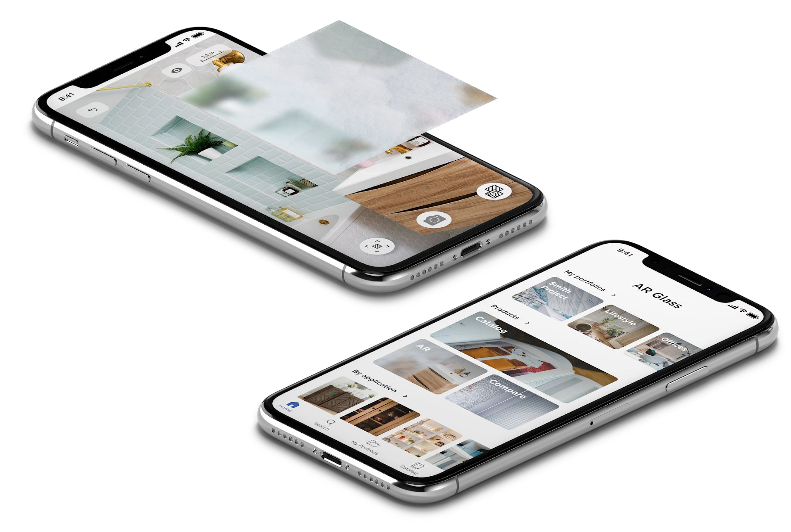
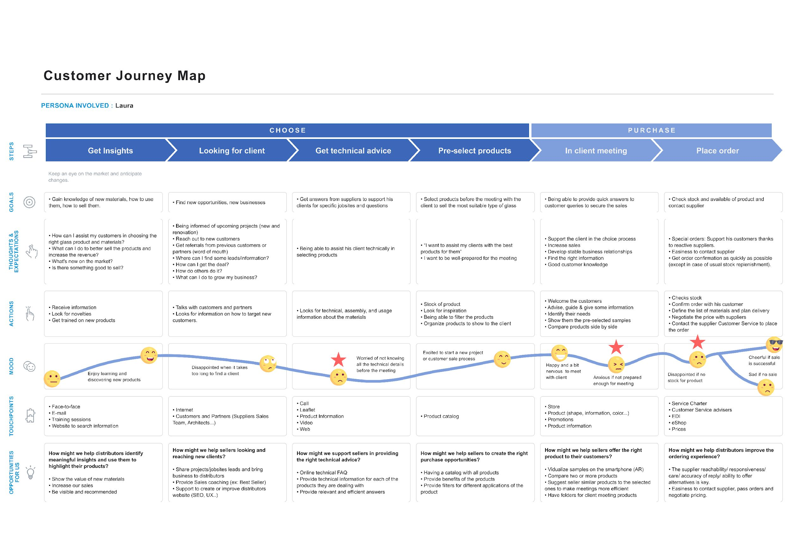
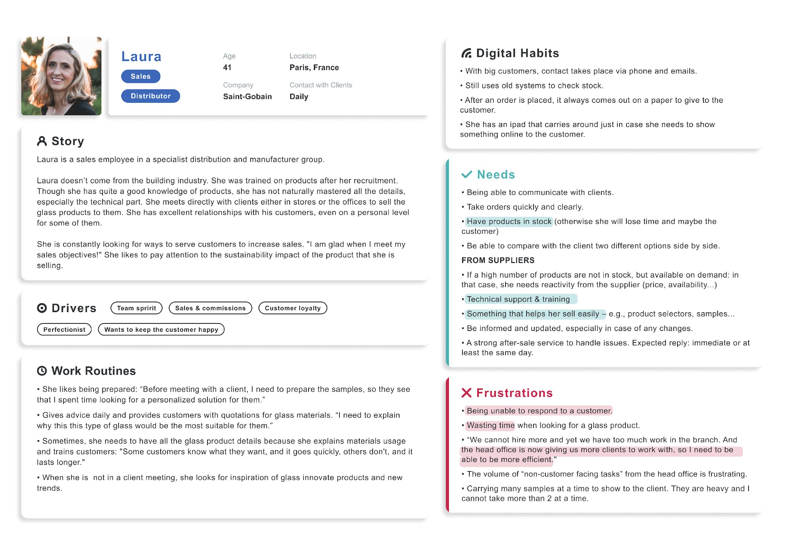
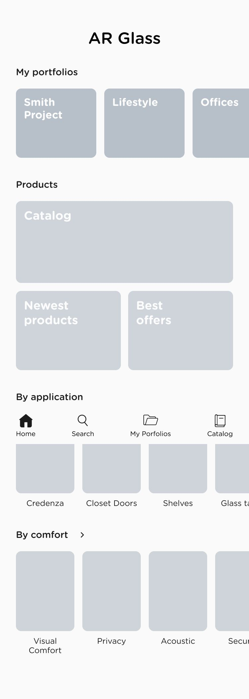
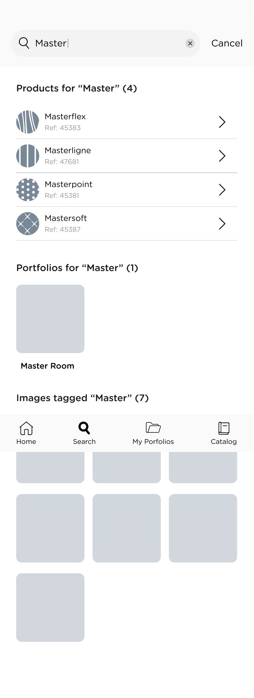
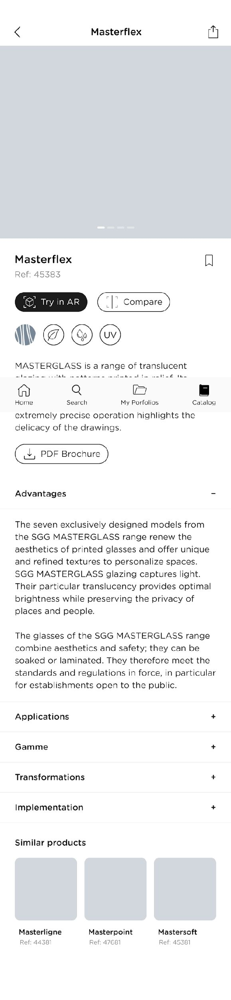
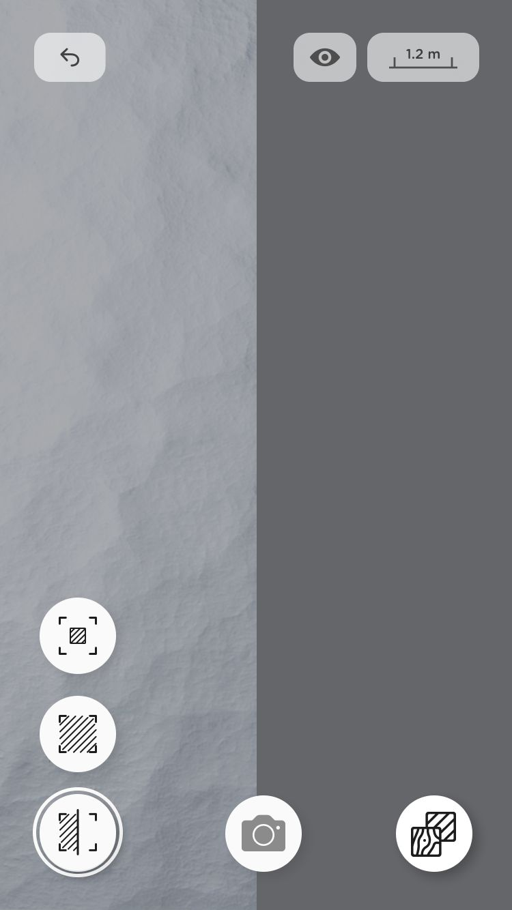
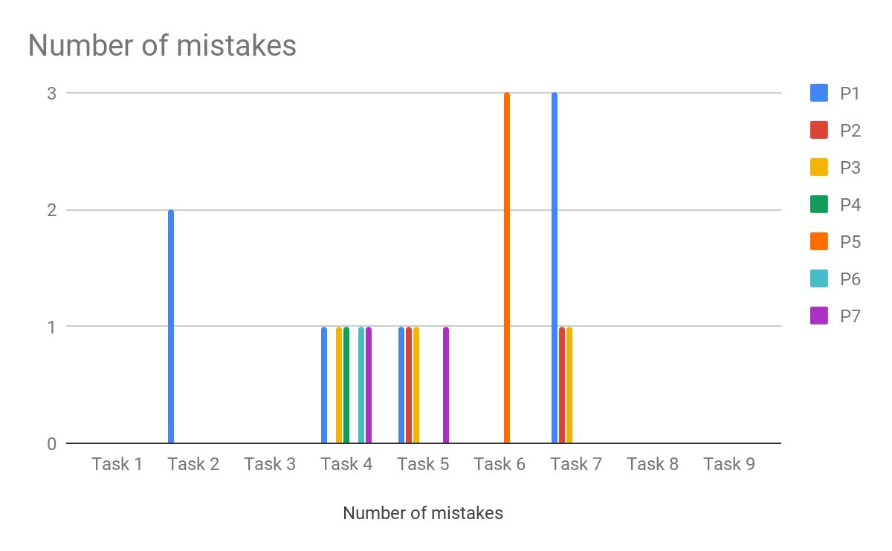
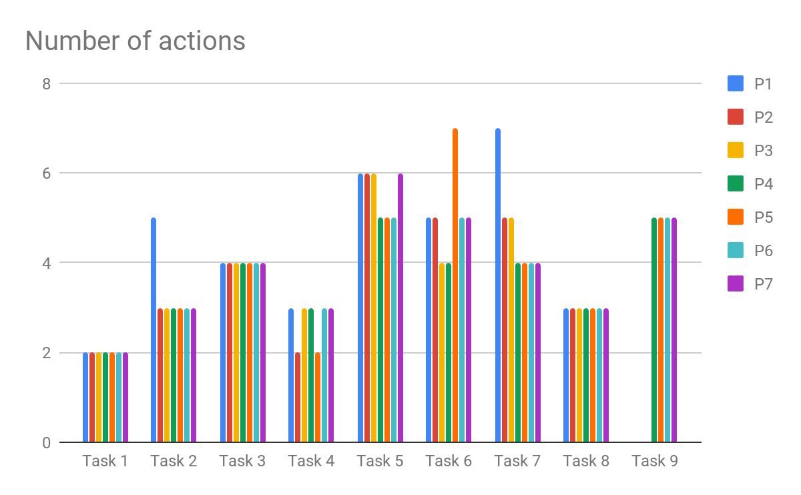
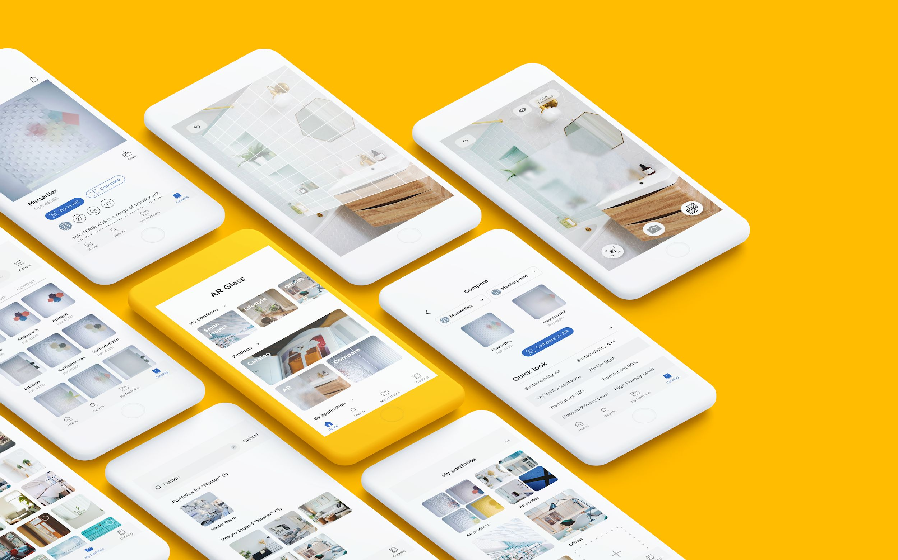

Visualising glass in augmented reality
A catalogue app that lets Saint-Gobain's sales people show a glass or a mirror in the customer's own room, instead of asking them to imagine it from a sample.

A catalogue you can hold up to the wall
Saint-Gobain came to us to improve sales performance with a visualisation tool that was high resolution and realistic enough to sell from. After researching the options, augmented reality was the one that fit.
- Role
- UX and UI design
- Method
- User-Centred Design
- Scope
- Research with the sales team, persona and customer journey, information architecture, low-fidelity prototypes, two rounds of user testing, and the final interface
Context
The app is an internal tool. It exists to make it easier for vendors to sell glass and mirrors, which are hard to show and harder to picture in a room from a swatch.
Saint-Gobain wanted the existing system reworked rather than patched: new features, easier navigation, and a rethink of the information architecture behind the catalogue.
How do you sell something whose whole appeal is how it looks in a particular light, in a particular room?
The problem in one lineResearch
We started from the sales people rather than from the catalogue. What is keeping them from doing their job efficiently, what obstacles do they hit, and which kind of visualisation would actually help them perform better?
-
Is the digital process adapted to their workflow?
The tool had to fit how a sale actually happens, in front of a customer, not how the catalogue is organised internally.
-
How can the selling process be simplified?
Fewer steps between a customer asking a question and the vendor being able to show them an answer.
To pin down the primary needs, the pain points and the touchpoints in the sale, we used two techniques: a persona and a customer journey map.
Laura is 41 and works in sales at Saint-Gobain. She does not come from the building industry; she was trained on the products after being recruited. She has excellent relationships with her customers, personal ones with some of them.


Low-fidelity prototype
Two directions were drawn out far enough to be tested against each other, covering the catalogue, the search, the product detail and the augmented reality view.




User testing
The point was to see how well each design matched the mental models of the people who would use it, judged on efficiency, effectiveness and satisfaction.
- 1Twenty second testOn the main screen, to find out what people took away from it before they had time to study it.
- 2Thinking aloudEight scenarios covering the main goals of the users, written at different levels of difficulty to stretch the functionality being tested.
- 3SatisfactionMeasured with the SUS questionnaire.
-
SUS score
79.6
Above the 68 point average that the questionnaire treats as the line between below and above average usability.


The app
The catalogue, the product detail and the augmented reality view, after the testing had been folded back in.
